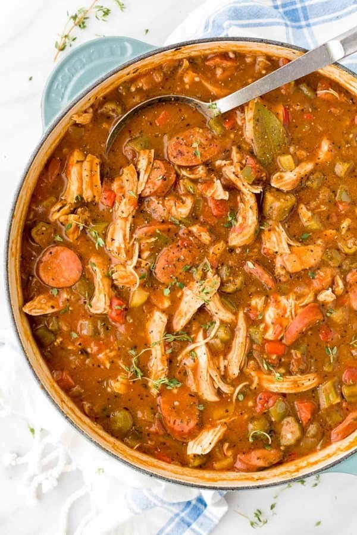

Sausage and shrimp gumbo

Description
Gumbo is the official state cuisine of Louisiana, and is the product of its famous Creole-Cajun heritage. It is a heavily seasoned stew that combines several varieties of meat or seafood with a sauce or gravy, and is often eaten with white rice.
Gumbos all contain certain specific main ingredients:
- the “Cajun Holy Trinity” which consists of celery, onions, and green peppers
- roux
- homemade stock
Ingredients
- 1 cup (120 grams) all-purpose flour
- 3/4 cup bacon drippings
- 1 cup (120 grams) celery, coarsely chopped
- 1 large onion, coarsely chopped
- 1 large green bell pepper, coarsely chopped
- 5 cloves garlic, minced
- 1 pound (450 grams) andouille sausage, sliced
- 3 quarts (2.8 liters) water
- 6 cubes beef bouillon
- salt, to taste
- 4 bay leaves
- Cajun seasoning blend, to taste
- 1/2 teaspoon (1/2 gram) dried thyme
- 1 (14.5 ounce) can stewed tomatoes
- 1 (6 ounce) can tomato sauce
- 2 teaspoons (3 grams) cornstarch
- 1 pound (450 grams) lump crabmeat
- 1 pound (450 grams) cooked, shredded chicken
- 3 pounds (1,350 grams) uncooked shrimp, peeled and deveined
- 2 tablespoons (34 grams) Worcestershire sauce
Steps
- Whisk together flour and bacon drippings in a large, heavy saucepan over medium-low heat until smooth. Cook roux, whisking constantly, until it turns a rich mahogany brown color. This can take 20 to 30 minutes; watch heat carefully and whisk constantly or roux will burn. Remove from heat; continue whisking until mixture stops cooking.
- Place celery, onion, green bell pepper, and garlic into the work bowl of a food processor, and pulse until all vegetables are very finely chopped.
- Stir vegetables into the roux, and mix in chicken and sausage. Bring mixture to a simmer over medium-low heat, and cook until vegetables are tender, 10 to 15 minutes. Remove from heat and set aside.
- Combine water and beef bouillon cubes in a large Dutch oven or soup pot and bring to a boil over medium-high heat. Stir until bouillon cubes dissolve, then whisk roux mixture into the boiling water.
- Reduce heat to a simmer and mix in salt, Cajun seasoning, bay leaves, thyme, crushed tomatoes, and tomato sauce. Simmer soup over low heat for 1 hour; mix in corn starch at the 45-minute mark.
- Mix in reserved vegetables, crabmeat, shrimp, and Worcestershire sauce, and simmer until flavors have blended, 45 more minutes.